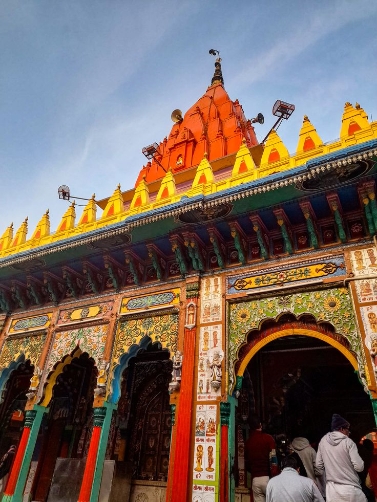
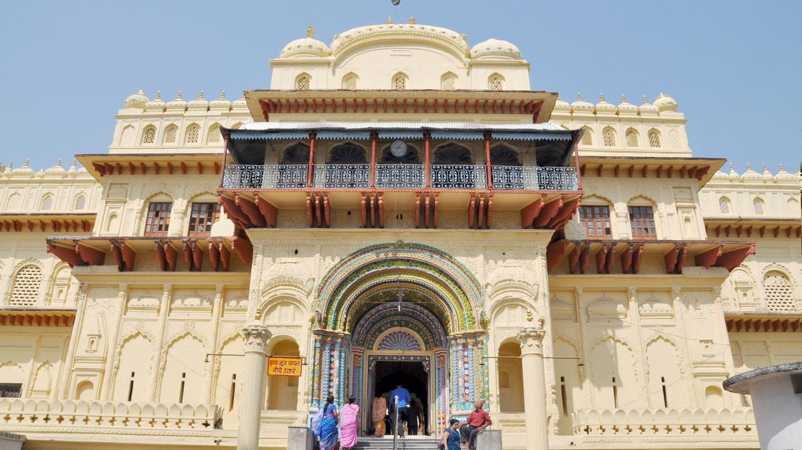
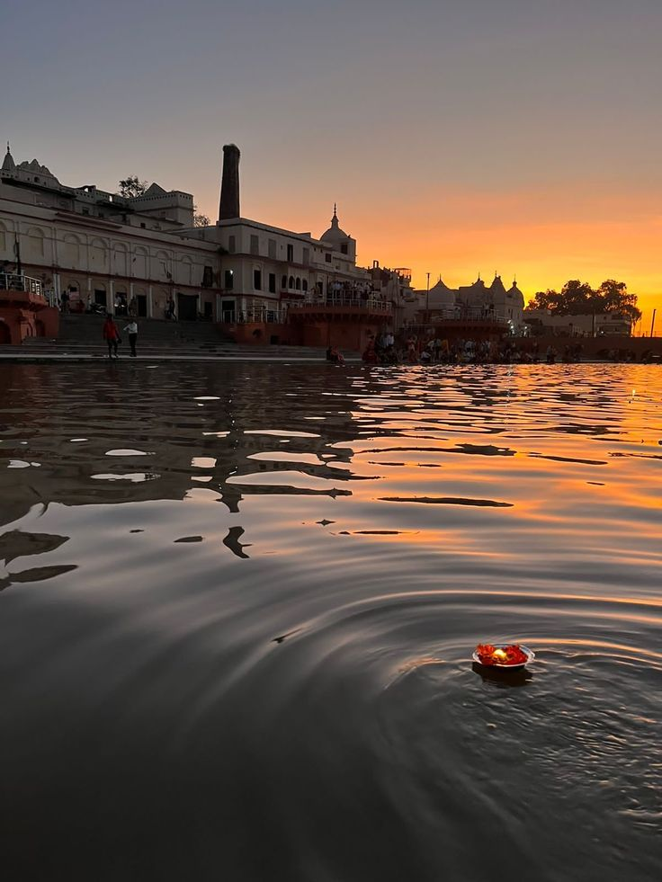

Places to Visit

Shri Ram Mandir
The birthplace of Lord Ram and the spiritual heart of Ayodhya.
The grand Ram Mandir represents devotion, faith, and cultural pride.

Hanuman Garhi
A famous hilltop temple dedicated to Lord Hanuman.
It is believed that Lord Hanuman guards Ayodhya from here.

Kanak Bhawan
A beautiful temple associated with Lord Ram and Goddess Sita.
Known for its stunning architecture and intricate carvings.

Sarayu Ghat
A peaceful riverside area for prayers and meditation.
A serene spot along the holy Sarayu River, perfect for spiritual reflection.